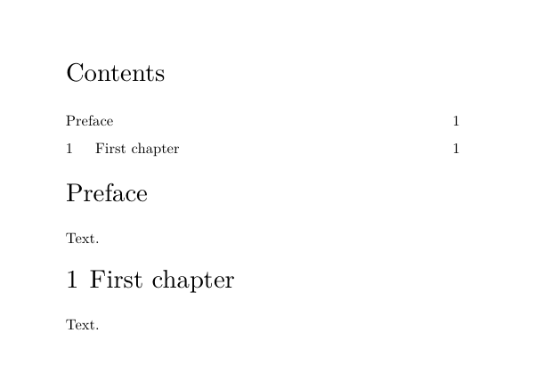

| TODO: This page is under construction as part of the renewal of the "Document structure and headlines" documentation area. Feel free to improve, correct, or extend it where useful. (See: To-Do List) |
HOW-TO — Including or excluding heads from the table of contents
This page explains how to control whether chapter, section, unnumbered, and custom heads participate in a table of contents.
For general ToC creation, selection, and formatting, see Table of contents.
For custom renderers, manually inserted entries, metadata, and nested lists, see Create specialised tables of contents.
Contents
- 1 1. What controls whether a head appears?
- 2 2. Include or exclude complete head types
- 3 3. True unnumbered heads are not ordinary ToC entries by default
- 4 4. Include an unnumbered head without advancing the ordinary counter
- 5 5. A front-matter chapter is a different case
- 6 6. Do not confuse number=no with list exclusion
- 7 7. Exclude one otherwise numbered head
- 8 8. Do not use list= to mean “exclude this entry”
- 9 9. Prefer a dedicated head to changing title globally
- 10 10. Manual inclusion is a different mechanism
- 11 11. Quick recipes
- 12 12. Related pages
- 13 13. Attribution and validation
1. What controls whether a head appears?
A structural head does not appear in a table of contents merely because it exists in the document.
For an ordinary structural entry to appear, several conditions must be satisfied:
STRUCTURAL HEAD
│
▼
was it saved as a listable entry?
│
├── no ───────────────► absent
│
▼ yes
is its list name requested?
│
├── no ───────────────► absent
│
▼ yes
does it pass the current selection?
│
├── no ───────────────► absent
│
▼ yes
ToC
The three questions correspond broadly to different mechanisms:
| Question | Main mechanism |
|---|---|
| Is the structural item saved as listable? | head setup, especially incrementnumber= and, in specialised cases, saveinlist=
|
| Is this kind of entry represented by the ToC? | \setupcombinedlist[content][list={...}]
|
| Is the saved entry selected in this structural context? | criterium=... and levels=...
|
Structure, numbering, and ToC participation are different properties
A head can exist structurally without being printed in the ToC.
Likewise, hiding a visible number does not by itself determine whether the head participates in a list.
2. Include or exclude complete head types
The standard content combined list can be configured with an
explicit list of entry names.
For example:
\setupcombinedlist [content] [list={chapter,section}]
means that chapter and section entries can participate in this ToC.
Subsections remain part of the document structure but are not represented by this combined list.
To include them:
\setupcombinedlist [content] [list={chapter,section,subsection}]
2.1. Exclude a complete head type
To exclude a complete structural level from the ToC, leave its list name out of the composition.
For example:
\setupcombinedlist [content] [list={chapter,section}]
excludes subsection entries from content even
though subsections may still exist and be numbered normally in the
document.
This does not alter document structure
Changing:
list={chapter,section}
to:
list={chapter,section,subsection}
changes the composition of the ToC, not the hierarchy of the document.
3. True unnumbered heads are not ordinary ToC entries by default
ConTeXt provides corresponding numbered and unnumbered head families:
chapter ↔ title section ↔ subject subsection ↔ subsubject ...
The unnumbered form is a distinct head type.
For example, a subject is not simply a section whose printed
number has been hidden.
By default, true unnumbered heads such as title,
subject, and subsubject are not ordinary
entries of the standard content list.
Two conditions are involved:
Is subject saved as a listable item?
│
└── normally no
Is subject requested by content?
│
└── normally no
Merely adding subject to list={...} is therefore
not sufficient if the structural item itself has not been saved as a list
entry.
4. Include an unnumbered head without advancing the ordinary counter
When an unnumbered head should appear in the ToC but should not consume the next ordinary chapter or section number, use:
incrementnumber=list
The three relevant states are:
| Setting | Increment ordinary structural counter? | Save as listable? |
|---|---|---|
incrementnumber=yes
|
yes | yes |
incrementnumber=no
|
no | no |
incrementnumber=list
|
no | yes |
For a special-purpose head, it is usually safer to define a dedicated head type.
For example:
-
\setuppapersize[A7,landscape] \setupbodyfont[8pt] \setuppagenumbering[state=stop] \setuphead [chapter,title] [page=no] \definehead [fronttitle] [title] \setuphead [fronttitle] [incrementnumber=list, number=no, page=no] \setupcombinedlist [content] [list={fronttitle,chapter}] \starttext \completecontent \startfronttitle [title={Preface}] Text. \stopfronttitle \startchapter [title={First chapter}] Text. \stopchapter \stoptext
-

The result is conceptually:
Contents Preface 1 First chapter
The Preface is listable but does not consume chapter number 1.
Validated with current LMTX
The dedicated-head pattern with incrementnumber=list was
validated with ConTeXt LMTX 2026.07.29.
The special head appears in the ToC while the first ordinary chapter remains Chapter 1.
5. A front-matter chapter is a different case
A chapter used inside frontmatter remains structurally a
chapter.
For example:
-
\setuppapersize[A7,landscape] \setupbodyfont[8pt] \setuppagenumbering[state=stop] \setuphead[chapter][page=no] \starttext \placecontent \startfrontmatter \startchapter[title={Introduction}] Text. \stopchapter \stopfrontmatter \startbodymatter \startchapter[title={First numbered chapter}] Text. \stopchapter \stopbodymatter \stoptext
-

The front-matter chapter has no visible chapter number, but it remains a chapter and can participate normally in the chapter list.
This is different from using:
\title{Introduction}
Conceptually:
front-matter chapter
structural name = chapter
visible number = suppressed
list participation = retained
true title head
structural name = title
ordinary list participation = off by default
6. Do not confuse number=no with list exclusion
The setting:
number=no
controls whether the structural number is displayed.
It does not mean “exclude this head from the ToC”.
For example:
\setuphead [chapter] [incrementnumber=yes, number=no]
can hide the printed chapter number while the structural counter continues to advance.
Therefore:
number=no
→ hide the visible number
incrementnumber=no
→ do not increment and do not save as an ordinary list entry
incrementnumber=list
→ do not increment, but save as a list entry
Use the setting that corresponds to the structural behaviour required, rather than treating visible numbering and ToC participation as the same problem.
7. Exclude one otherwise numbered head
Current ConTeXt exposes the structural setting:
saveinlist=no
for suppressing the list record of an individual structural item.
The intended form is, for example:
\startchapter [title={Chapter not in the ToC}, saveinlist=no] Text. \stopchapter
This is conceptually different from:
incrementnumber=no
because the intention is to keep the structural item and its ordinary counter behaviour while suppressing only its list entry.
Requires validation with the current LMTX version
saveinlist=no is part of the current structural interface, but
a 2026 mailing-list report showed unexpected displayed chapter numbering
when it was applied to an individual chapter.
This specific use has not yet been included in the MWE validation series for LMTX 2026.07.29.
Until that test is completed, treat saveinlist=no as a
current but implementation-sensitive mechanism rather than as a fully
validated recipe.
8. Do not use list= to mean “exclude this entry”
The list= key of a structural head supplies the text to be
used in list representations.
For example:
\startchapter [title={A deliberately long chapter title}, list={Short chapter title}]
means:
printed head → A deliberately long chapter title ToC entry → Short chapter title
It does not mean that the chapter is excluded.
Likewise, the list={...} setting in
\setupcombinedlist has another purpose:
\setupcombinedlist [content] [list={chapter,section}]
Here it specifies the names of the entry types represented by the combined list.
These two uses of list should not be confused.
9. Prefer a dedicated head to changing title globally
Avoid making the standard title head globally listable merely
to create one special ToC entry.
For example:
\setuphead [title] [incrementnumber=list, number=no]
affects every title head.
This matters because \completecontent itself creates a
structural title head for Contents.
If title is also included in the content
composition, the ToC can therefore acquire an entry for its own
Contents heading.
Prefer a dedicated head
For one special unnumbered listable division, prefer:
\definehead [fronttitle] [title] \setuphead [fronttitle] [incrementnumber=list, number=no]
and explicitly include fronttitle in the desired combined
list.
This avoids changing the behaviour of every ordinary title.
10. Manual inclusion is a different mechanism
When an item is not a structural division but nevertheless needs a manual list record, ConTeXt provides:
\writetolist
For example:
\writetolist [section] [location=here] {} {Bibliography}
This injects a list record.
It does not create a section.
Therefore, use a structural head plus the appropriate list settings when the item is genuinely part of the document hierarchy.
Use \writetolist only when a manual list record is
deliberately required.
For detailed examples, see Create specialised tables of contents.
11. Quick recipes
| Task | Recommended mechanism |
|---|---|
| Include chapters and sections, but not subsections | \setupcombinedlist[content][list={chapter,section}]
|
| Include subsections too | \setupcombinedlist[content][list={chapter,section,subsection}]
|
| Create an unnumbered head that appears in the ToC without consuming the ordinary counter | dedicated head + incrementnumber=list
|
| Hide a printed number | number=no
|
| Make an unnumbered head non-listable | incrementnumber=no
|
| Use a shorter ToC title | head key list={Short title}
|
| Keep an ordinary front-matter chapter listable without a visible number | use chapter inside frontmatter
|
| Suppress one otherwise numbered structural item from the list | saveinlist=no — implementation-sensitive; validate before relying on it
|
| Insert a manual non-structural list record | \writetolist
|
12. Related pages
- Document structure and headlines
- Table of contents
- Create specialised tables of contents
- Understanding document structure and section heads
- Section numbering
12.1. Command reference
13. Attribution and validation
This page separates head inclusion and exclusion from the broader topics of ToC selection and rendering.
The following mechanisms were specifically validated with ConTeXt LMTX 2026.07.29 during the renewal of the "Document structure and headlines" documentation area:
- exclusion of a structural head type through the combined-list composition;
- the default non-participation of true unnumbered head families;
- front-matter chapters remaining listable although their visible number is suppressed;
-
incrementnumber=listfor a dedicated unnumbered listable head; -
the risk of changing the standard
titlehead globally.
The individual saveinlist=no case remains to be checked separately before it is promoted from implementation-sensitive material to a validated user-level recipe.